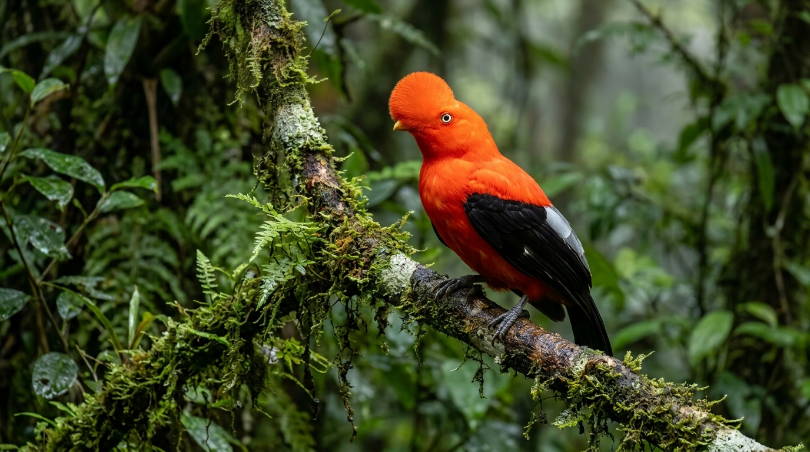

🇵🇪 Segundo país del mundo con mayor diversidad de aves
El cielo peruano, hogar de más de 2.340 especies de aves
Desde el majestuoso vuelo del Cóndor en los cañones andinos hasta el vibrante cortejo del Gallito de las Rocas en los bosques nublados. Explora el paraíso mundial del avistamiento de aves.

0
Especies de Aves Registradas
0
Especies Exclusivas (Endémicas)
0
Áreas Naturales Protegidas
0
Megarrutas de Observación
Hábitats Únicos
Tres Regiones, Infinitos Cantos
La geografía del Perú alberga desde las corrientes marinas frías de Humboldt hasta las cumbres glaciares y la inmensidad amazónica.
Trivia Ornitológica
¿Sabes cuál es el Ave Nacional Oficial del Perú?
Pon a prueba tus conocimientos sobre la biodiversidad del país: